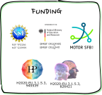
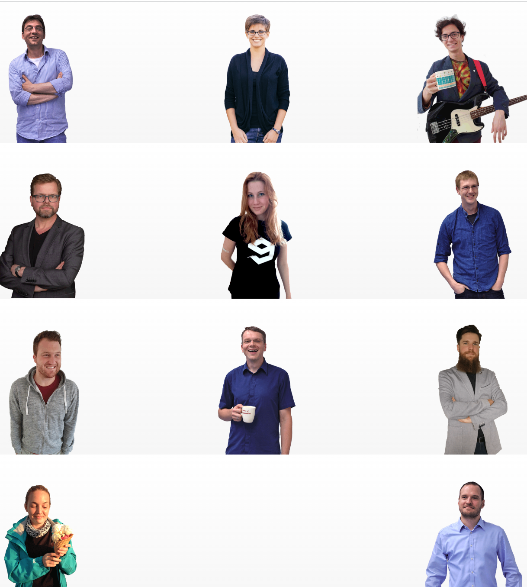
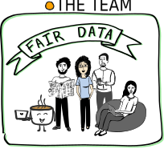
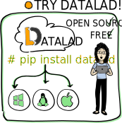
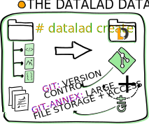
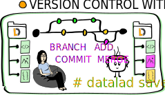
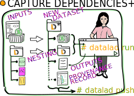
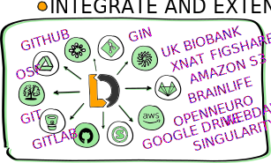

BrainHack Nordic 2022
 @fMRwhy
@fMRwhy
 jsheunis
jsheunis
Psychoinformatics lab
Institute of Neuroscience and Medicine, Brain & Behavior (INM-7), Germany
Acknowledgements
|  |  |
- The People with Money
- The Psychoinformatics + DataLad teams
- All contributors to the open-source DataLad ecosystem
- Cyril and Melanie, and the host institution
A couple of things about me...
- I'm a research software engineer at FZ Jülich. My background:
- Studied engineering (robotics) in South Africa
- Worked for large company and then a tiny startup
- Moved to the Netherlands to do a Phd in neuroimage processing
- Started my current job at FZJ in Germany
- I passionately like: open and inclusive science, programming, learning, a South African "braai"
- I passionately dislike: hierarchies, systemic mysogyny/racism/ableism, any form of admin
A couple of things about YOU...
http://etc.ch/AHNNAgenda
- Context
- Practical aspects
- Get cracking!
1. The Context
|  |
|
How does Alice go about her daily job?*
1. The Context
- When working locally, Alice likes to have an automated record of:
- when a given file was last changed
- where it came from
- what input files were used to generate a given output
- why some things were done.
- Even if she doesn't share her work, this is essential for her future self
- Project is exploratory: often large changes to her analysis scripts
- She enjoys the comfort of being able to return to a previously recorded state
This is: *local version control*
1. The Context
- Alice's work is not confined to a single computer:
- laptop / desktop / remote server
- there should be an automatic+efficient way to synchronize
- Parts of the data are collected or analysed by colleagues from another team. This requires:
- distributed synchronization with centralized storage
- preservation of origin & authorship of changes
- effective combination of simultaneous contributions
This is: *distributed version control*
1. The Context
- Alice applies local version control for her own work
- She also applies distributed version control when working with colleagues and collaborators
- She often needs to work on a subset of data at any given time:
- all files are kept on a server
- a few files are rotated into and out of her laptop
- Alice needs to publish the data at project's end:
- raw data / outputs / both
- completely or selectively
This is: *data management (with DataLad 😀)*
1. The Context
2. Practical aspects
- Information:
- github.com/jsheunis/brainhack-nordic-datalad - Slides:
- jsheunis.github.io/brainhack-nordic-datalad - Cloud-computing environment:
- datalad-hub.inm7.de - Format:
- Hands-on
- Work on your own machine in the browser
- Step-by-step code execution
- Ask questions any time!
- Timing:
- 2 hrs (including intro)
- Short break at 1hr
2. Practical aspects
- We'll work in the browser on a cloud server with JupyterHub
- We have pre-installed DataLad and other requirements
- We will work via the terminal
- Log in using the email address with which you registered for the brainhack
- Select a password when logging in for the first time; remember it!
3. So let's do this!
datalad
Check the installed version:
datalad --version
For help on using DataLad from the command line:
datalad --help
For extensive info about the installed package, its dependencies, and extensions, use
wtf:
datalad wtf
git identity
Check git identity:
git config --get user.name
git config --get user.email
Configure git identity:
git config --global user.name "Stephan Heunis"
git config --global user.email "s.heunis@fz-juelich.de"
Using datalad via its Python API
Open a Python environment:
ipython
Import and start using:
import datalad.api as dl
dl.create(path='mydataset')
Exit the Python environment:
exit
Datalad datasets...
...Datalad datasets
Create a dataset (here, with thetext2git config):
datalad create -c text2git bids-data
Let's have a look inside. Navigate using
cd (change directory):
cd bids-data
List the directory content, including hidden files, with
ls:
ls -la .
Version control...
...Version control
Let's add some Markdown text to a README file in the dataset
echo "# A BIDS structured dataset for my input data" > README.md
Now we can check the
status of the dataset:
datalad status
We can save the state with
save
datalad save -m "Add a short README"
Further modifications:
echo "Contains functional task data of one subject" >> README.md
Save again:
datalad save -m "Add information on the dataset contents to the README"
Now, let's check the dataset history:
git log
Data consumption & transport...

...Data consumption & transport...
Install a dataset from remote URL (or local path) usingclone:
cd ../
datalad clone \
https://github.com/psychoinformatics-de/studyforrest-data-phase2.git
We can now view the cloned dataset's file tree:
cd studyforrest-data-phase2
ls
Let's check the dataset size (i.e. git repository):
du -sh # this will print the size of the directory in human readable sizes
Let's check the actual dataset size (i.e. git repository + annexed content):
datalad status --annex
The DataLad dataset is just the git repository,
i.e. the metadata of all files in the dataset,
including the content of all files comitted to git.
The actual file content in the annex can be retrieved as needed.
...Data consumption & transport
We can retrieve actual file content withget (here, multiple files):
# get all files of sub-01 for all functional runs of the localizer task
datalad get \
sub-01/ses-localizer/func/sub-01_ses-localizer_task-objectcategories_run-*.nii.gz
If we don't need a file locally anymore, we can
drop it:
# drop a specific file
datalad drop \
sub-01/ses-localizer/func/sub-01_ses-localizer_task-objectcategories_run-4_bold.nii.gz
And it's no problem if you need that exact file again, just
getit:
# get a specific file
datalad drop \
sub-01/ses-localizer/func/sub-01_ses-localizer_task-objectcategories_run-4_bold.nii.gz
Therefore: no need to store all files locally.
Data just needs to be available from at least one location,
then you can
get what you want when you need it,
and drop the rest.
Dataset nesting...
Datasets can be nested in superdataset-subdataset hierarchies:
- Helps with scaling (see e.g. the Human Connectome Project dataset )
- Version control tools struggle with >100k files
- Modular units improves intuitive structure and reuse potential
- Versioned linkage of inputs for reproducibility
...Dataset nesting
Let's make a nest! First we navigate into the top-level dataset:
cd ../bids-data
Then we clone the input dataset into a specific location in the file tree of the existing dataset, making it a subdataset (using the
-d/--dataset flag):
datalad clone --dataset . \
https://github.com/datalad/example-dicom-functional.git \
inputs/rawdata
Similarly, we can clone the analysis container (actually, a set of containers from ReproNim) as a subdataset:
datalad clone -d . \
https://github.com/ReproNim/containers.git \
code/containers
Let's see what changed in the dataset, using the
subdatasets command:
datalad subdatasets
Computationally reproducible execution...
- which script/pipeline version
- was run on which version of the data
- to produce which version of the results?
...Computationally reproducible execution...
- The
datalad runcan run any command in a way that links the command or script to the results it produces and the data it was computed from - The
datalad reruncan take this recorded provenance and recompute the command - The
datalad containers-run(from the extension) can capture software provenance in the form of software containers in addition to the provenance that datalad run captures
With the
datalad-container extension, we can inspect the list of registered containers (recursively):
datalad containers-list --recursive
We'll use the
repronim-reproin container for dicom conversion.
...Computationally reproducible execution
Now, let's try out thecontainers-run command:
datalad containers-run -m "Convert subject 02 to BIDS" \
--container-name code/containers/repronim-reproin \
--input inputs/rawdata/dicoms \
--output sub-02 \
"-f reproin -s 02 --bids -l '' --minmeta -o . --files inputs/rawdata/dicoms"
What changed after the
We can use
containers-run command has completed?
We can use
datalad diff (based on git diff):
datalad diff -f HEAD~1
We see that some files were added to the dataset!
And we have a complete provenance record as part of the git history:
And we have a complete provenance record as part of the git history:
git log -n 1
Publishing datasets...
 |
 |
We will use GIN: gin.g-node.org:
...Publishing datasets
DataLad allows you to add repositories assiblings to a dataset, to which data can be published with push.
datalad siblings add -d . \
--name gin \
--url git@gin.g-node.org:/your-gin-username/bids-data.git
You can verify the dataset's siblings with the
siblings command:
datalad siblings
And we can push our complete dataset (git repository and annex) to GIN:
datalad push --to gin
Using published data...
Let's use our published data in a new analysis, to demonstrate reusability and the usefulness of modularity.First let's create a new dataset using the yoda principles:
cd ../
datalad create -c yoda myanalysis
Then we can clone our GIN-published dataset as a subdataset
(NB: use the browser URL without ".git" suffix):
(NB: use the browser URL without ".git" suffix):
cd myanalysis
datalad clone -d . \
https://gin.g-node.org/your-gin-username/bids-data \
input
...Using published data...
We have data, and now we need an analysis script. We will use DataLad'sdownload-url which gets the content of a script and registers its source:
datalad download-url -m "Download code for brain masking from Github" \
-O code/get_brainmask.py \
https://raw.githubusercontent.com/datalad-handbook/resources/master/get_brainmask.py
Now we have data and an analysis script, and we still need the correct software environment within which the run the analysis.
We will again use the
datalad-container extension to register a container to the new dataset:
datalad containers-add nilearn \
--url shub://adswa/nilearn-container:latest \
--call-fmt "singularity exec {img} {cmd}"
...Using published data
Finally, we can run the analysis:
datalad containers-run -m "Compute brain mask" \
-n nilearn \
--input input/sub-02/func/sub-02_task-oneback_run-01_bold.nii.gz \
--output figures/ \
--output "sub-02*" \
"python code/get_brainmask.py"
Afterwards, we can inspect how specific files came to be, e.g.:
git log sub-02_brain-mask.nii.gz
And since the run-record is part of the dataset's git history, we know the provenance.
DataLad can use this machine-readable information to rerun the analysis without you having to specify any information again:
datalad rerun